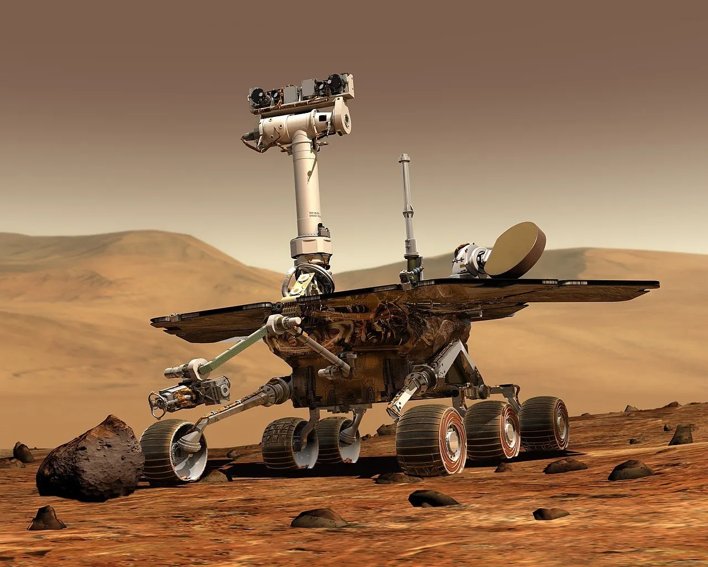
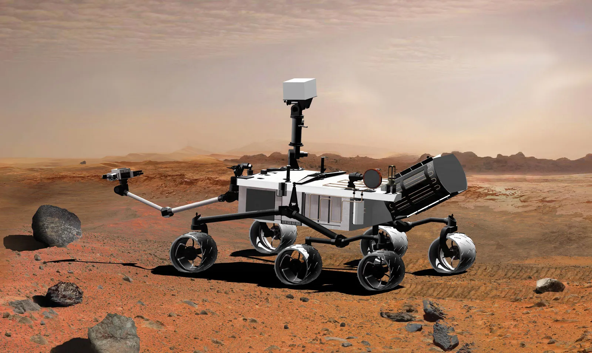
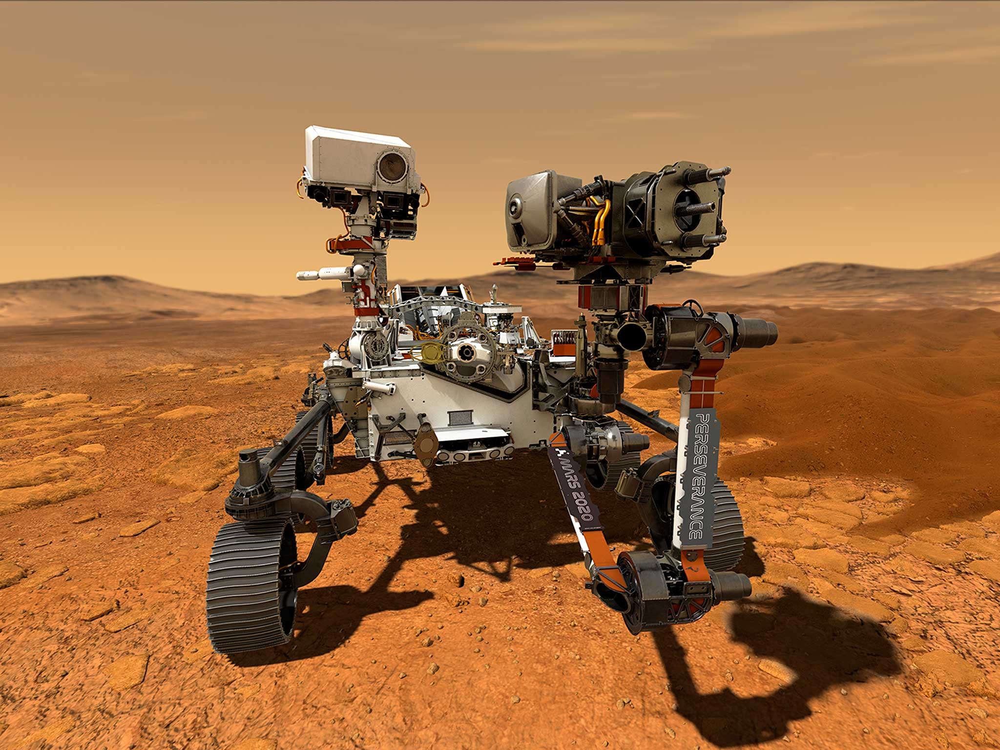

Exploring Mars with Rovers
The Mars Rovers are robotic explorers sent by NASA to explore the surface of
Mars. These rovers have been instrumental in advancing our understanding of
the Red Planet, providing valuable data on its geology, climate, and potential
for past or present life. The Mars Rovers have made significant discoveries,
including evidence of ancient water flows, organic molecules, and diverse
geological formations. They continue to be a crucial part of NASA's ongoing
exploration of Mars, paving the way for future human missions to the planet.
Meet the Rovers
Spirit and Opportunity

Mission goals and overview
The Spirit and Opportunity rovers were designed to follow the water and study rocks and minerals.
Launch and landing details
The Spirit and Opportunity rovers were launched on June 10, 2003, and landed on Mars on January 4, 2004.
Key discoveries and achievements
The Spirit and Opportunity rovers discovered silica-rich soil, indicating that ancient Mars had both water and heat, creating potentially habitable environments.
Technical specifications
The Spirit and Opportunity rovers were 1.6 meters long and 2.4 meters high, with a mass of 185 kilograms.
Curiosity

Mission goals and overview
The Curiosity rover was designed to determine if Mars is suitable for microbial life.
Launch and landing details
The Curiosity rover was launched on November 26, 2011, and landed on Mars on August 6, 2012.
Key discoveries and achievements
Confirmed Gale Crater held an ancient lake with essential nutrients for life, discovered complex organic compounds, and is actively analyzing layers of Mount Sharp to study how Mars lost its atmosphere.
Technical specifications
The Curiosity rover is 3 meters long and 2.1 meters high, with a mass of 900 kilograms.
Perseverance

Mission goals and overview
Focusing on astrobiology, this rover is looking for signs of ancient microbial life in the Jezero Crater. Its key goal is to collect and cache rock/dust samples for future return to Earth, while also testing technologies (like oxygen generation) for futurehuman missions.
Launch and landing details
The Perseverance rover was launched on July 30, 2020, and landed on Mars on February 18, 2021.
Key discoveries and achievements
TLocated in Jezero Crater, it has confirmed an ancient, stable river delta, discovered organic compounds in rocks, and successfully operated the MOXIE experiment, producing oxygen from the atmosphere.
Technical specifications
The Perseverance rover is 3 meters long and 2.1 meters high, with a mass of 1025 kilograms.